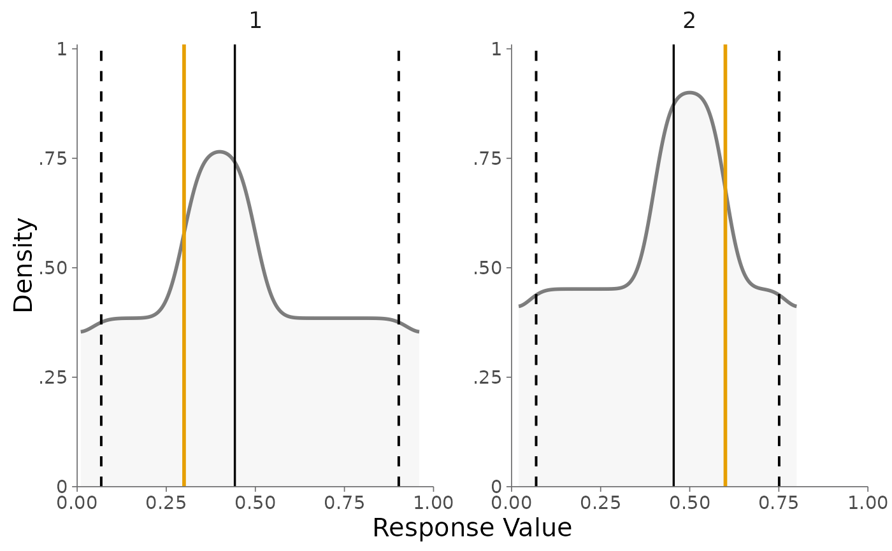

Generate a cumulative interval plot based on the provided lower and upper bounds, cluster IDs, and other optional parameters.
Usage
plot_intervals_cumulative(
lower,
upper,
cluster_id,
truth = NA,
min,
max,
facet_wrap = NULL,
weighted = FALSE,
show_quantiles = TRUE,
ncol = 3
)Arguments
- lower
A numeric vector of lower bounds.
- upper
A numeric vector of upper bounds.
- cluster_id
A vector of cluster IDs corresponding to the intervals.
- truth
A numeric vector of ground truth values. Default is NA.
- min
Numeric. The minimum value for the x-axis.
- max
Numeric. The maximum value for the x-axis.
- facet_wrap
A logical value indicating whether to use facet wrapping. Default is NULL.
- weighted
A logical value indicating whether the intervals should be weighted by their width. If TRUE, values are sampled uniformly within each interval. If FALSE, values are gathered using the same step size for all intervals. Default is FALSE.
- show_quantiles
A logical value indicating whether to show quantiles on the plot. Default is TRUE.
- ncol
The number of columns for facet wrapping. Default is 3.
Examples
# Example data
lower_bounds <- c(0.01, 0.3, 0.02, 0.4)
upper_bounds <- c(0.5, 0.96, 0.6, 0.8)
cluster_ids <- c(1, 1, 2, 2)
truth_values <- c(0.3, 0.3, 0.6, 0.6)
# Create cumulative interval plot
plot_intervals_cumulative(
lower = lower_bounds,
upper = upper_bounds,
cluster_id = cluster_ids,
truth = truth_values,
min = 0,
max = 1,
weighted = FALSE
)
#> Joining with `by = join_by(cluster_id)`
